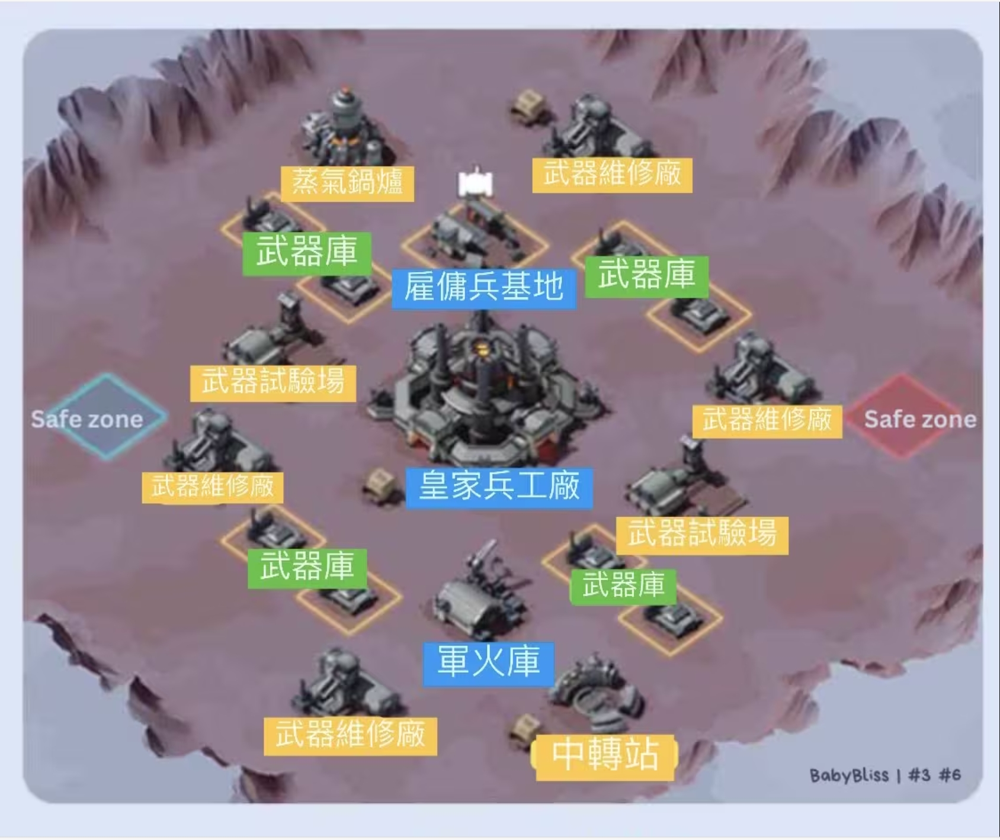
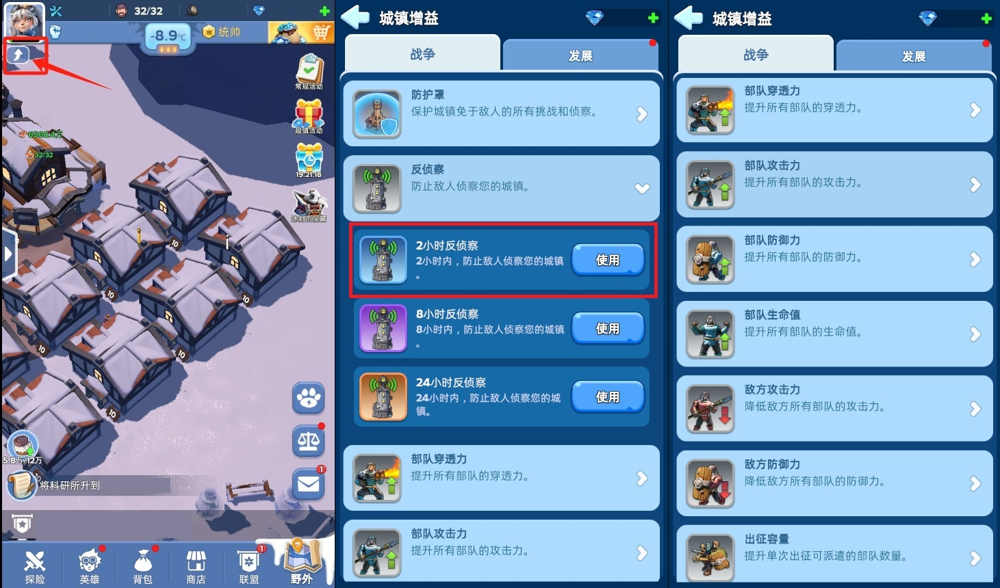
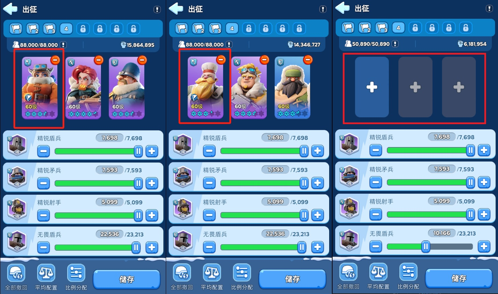
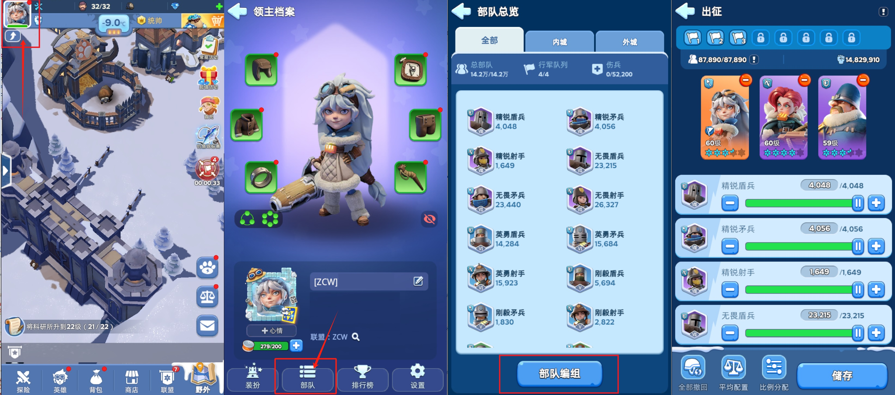
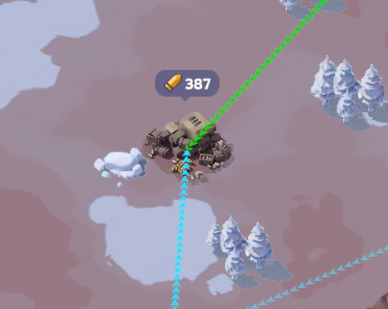
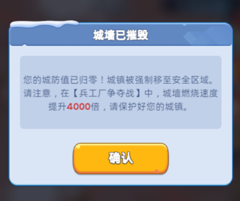

敲黑板！划重点！
这个活动开始需要运筹帷幄了！
----前排告示----
地图总览
先详细了解一下整张地图和建筑位置。
其中 蓝色 Safe zone为我方出生点，红色则为敌方出生点。 
第一阶段 开放建筑
中转站 ：【一座】【特殊能力：缩短一半迁城道具所需冷却时间】攻占后产出军工积分速度慢
蒸汽锅炉 ： 【一座】【特殊能力：缩短控制建筑所需时间】攻占后产出军工积分速度慢
武器维修场 ： 【四座】【无特殊能力】攻占后产出军工积分速度中等
武器试验场 ： 【两座】【无特殊能力】攻占后产出军工积分速度快
第二阶段 开放建筑[开战15分钟之后]
军火库 ：【一座】【特殊能力：伤害加成15%，受伤降低15%】攻占后产出军工积分速度慢
雇佣兵营地 ：【一座】【特殊能力：提供NPC部队可以攻击建筑】攻占后产出军工积分速度慢
皇家兵工厂 ： 【一座】【无特殊能力】攻占后产出军工积分速度 最快
第三阶段 开放建筑[间隔一定时间后出现]
武器库 ：【两批次】【无特殊能力】可采集军工积分
上述建筑的首次控制和持续占领积分数，请参考游戏内简介，这边不作过多赘述。
----战前准备----
推荐在进副本前选择使用 2小时反侦查 ，仅售400钻石。其他攻防Buff售价均为2000钻石，目前水平阶段可以不需要考虑，如需要使用的话，请量力而行。 车头编队，进攻比例为：5:2:3；防守比例为：6:2:2；
车身至少编辑三队，一队杰西 (5:2:3) 领队，一队帕特里克 (6:2:2) 领队，一队无英雄领队 (5:2:3) 领队。  部队编组具体操作如下：左上角头像 - 部队 - 部队编组。这样就可以进入到预设界面进行上述编组的预设。 
----战术说明----
战前已经做好了两队分组，但仍需要进行二次细分，分为第一梯队、第二梯队、第三梯队。分别负责不同的部分。
【开局】
第一梯队、第二梯队：第一组高迁蒸汽锅炉，第二组高迁中转站。第一梯队主力只打不占(对面高战来了，负责清对面车身)，由第二梯队负责占领。
第三梯队高迁至就近武器试验场和武器维修厂，最好全军出击，靠近中转战的第二梯队可以分调1-2人协助占领中转站旁武器维修厂。
除非明确看到对方已派兵出击或侦查之后确定对方城镇无兵，否则严禁单独攻击敌方城镇，先手攻击失利伤亡极大。
【二阶段】
第一梯队至少4人立即转战皇家兵工厂与雇佣兵营地(重要性：皇家兵工厂>雇佣兵>军火库) ，占领后换兵给防守部队。
在保证蒸汽锅炉，中转站 不丢的情况下其余部队继续占领其他建筑。
【三阶段】
目前已经步入终局了，第一梯队、第二梯队，仍需要保持前二阶段占领的建筑不丢失。
第三梯队可以开始派出队伍进行采集，由于被撞之后不会得分，时刻保持对面攻占时及时撤兵。同时所有人可以开始关注子弹的采集。
----技巧说明----
1.抢建筑首占，建筑首占非常重要
2.下面这个是子弹，采集不消耗行军队列(类似灯塔情报中的 营地救援)。 
建筑被打下来，子弹一定要快速去捡，子弹在第二阶段和第三阶段往往能翻盘。 偷袭或攻占敌方占领超过1w分的建筑务必提前报点，联络盟友一起快速捡子弹。
战术建议，如果最后出现对面皇家兵工厂打不下来且分差不大的情况下，最后几分钟高迁皇家兵工厂，最高战的两个车头卡双集结的模式去撞皇家兵工厂，撞完之后所有人盯着子弹捡。
3.医院无上限不会爆，战斗无死亡，所有伤兵不需要治疗，退出活动后完全恢复。
虽然兵工厂存在返场机制:玩家可以通过离开并重新返回战场的机制，治疗受伤士兵。但是重新返场需要12分钟，战斗只持续1小时。
目前联盟参战人数实际是不饱和的，替补成员也有可能直接参战。所以如果没有特殊情况下，不建议使用这个机制。
4.被对面掏炉子之后，会有如下提示，如果此时高迁已经冷却完毕(迁城时提示免费时)，请及时返回战场。 
5.明确自己战力和目标
第一梯队一定是记住掏炉子优先(打人>打建筑)，掏炉子一定是集结优先(集结>单打独斗)。(如果没有人配合你，那就是指挥严重失职)
第二梯队是绝对主力，要抢占建筑，要参与高战车头集结，要灵活机动防守。(如果你是不太会的第二梯队成员，除开指挥调度外，请默认按照建筑优先级（中转站>军火库>雇佣兵基地>蒸汽锅炉）死守一个建筑)
第三梯队在前中期一定不要参与前线攻防和重要建筑争夺，家门口的两个建筑足够刷分。(武器试验厂>武器维修厂)
切记
宁愿什么都不做，也不要随意发起进攻打乱指挥节奏，一波胡乱攻击导致散落的子弹被抢，会让前线盟友长期的艰难攻防的努力付之东流。
----着重强调----
这是团队副本，集结攻击永远大于单独出击，时刻明确自己的位置。 着重强调，不要因为过分追求个人得分而忽略团队合作，这么做必然会产生负面影响，只有在完全压倒的优势下才允许追求个人积分。